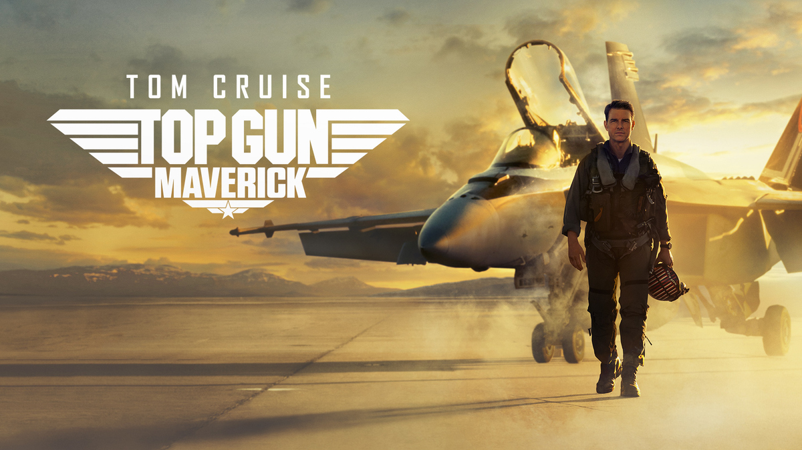
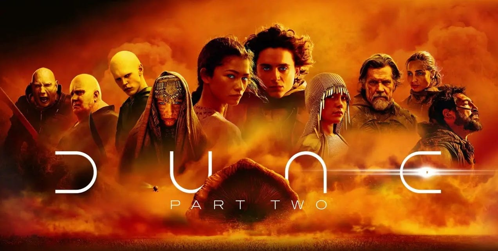
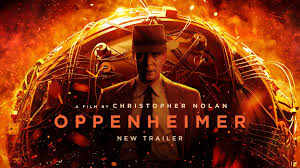
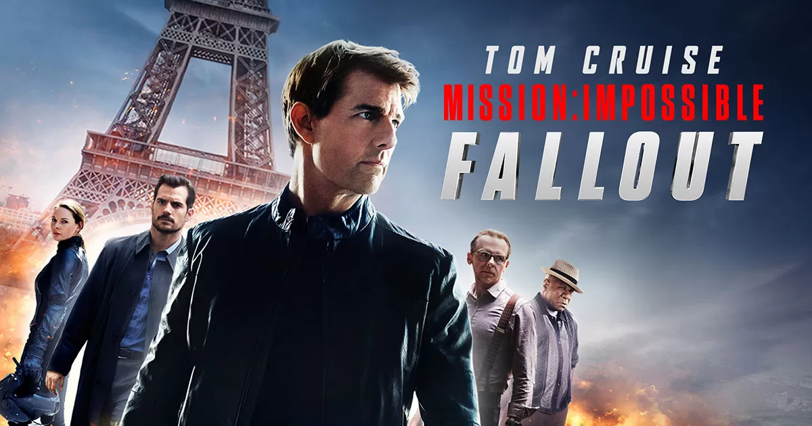

Top Gun: Maverick

Top Gun: Maverick takes off as a thrilling and nostalgic sequel that beautifully balances high-octane aerial action with heartfelt storytelling. Tom Cruise delivers a compelling performance as Maverick, showing both his fearless flying skills and emotional depth. The film’s breathtaking flight sequences and modern visual effects make it an unforgettable cinematic experience that honors the original while carving its own legacy.
Dune: Part Two

When I watched it in IMAX, my jaw dropped. Denis Villeneuve managed to bring this sequel to new heights with its captivating storytelling. Amazing performances from the cast especially Timmy. He delivered a powerful and transformative performance as Paul Atreides, showing incredible depth and growth from the first movie. The cinematography and musical score really caught my eye. You can’t never go wrong with Greig Fraser and Hans Zimmer as they have excellent track records working in great movies. This movie is not just a sequel, it’s an achievement in filmmaking. Overall. It was pure cinema.
Oppenheimer

Dark, intense, and brilliantly acted. Oppenheimer is a gripping and thought-provoking biographical drama that masterfully explores the complex life of J. Robert Oppenheimer and the moral dilemmas surrounding the creation of the atomic bomb. Christopher Nolan’s direction is intense and meticulous, supported by powerful performances and haunting visuals. The film challenges viewers to reflect on the consequences of scientific progress and the heavy burden of responsibility.
Mission: Impossible – Fallout

Pure action brilliance. Mission: Impossible – Fallout is an adrenaline-pumping action thriller that raises the bar for the franchise. With jaw-dropping stunts, a fast-paced plot, and Tom Cruise’s relentless dedication, it delivers nonstop excitement. The chemistry among the cast and the intense sequences keep you on the edge of your seat from start to finish.
F1: The Movie
They were absolutely right when they said this would be the most authentic racing movie ever made. The cast delivers outstanding performances, particularly Brad Pitt and Damson Idris. The racing sequences are thrilling, capturing the intensity and excitement perfectly. The cinematography is stunning, immersing you in the experience of being inside an F1 car. Hans Zimmer’s musical score is nothing short of exceptional. Highly recommend watching it in IMAX for the full, immersive experience️.